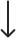
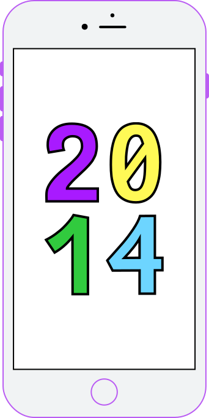
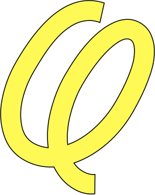

Моноширинный
Для заголовков

From:
Comic
Sans Neue Mono

Немного
шуточный...
шуточный...

История
Шрифт был создан в 2014 году
Джанни Белуз. Изначальное
название шрифта Comic Sans
Neue Mono.
* В этом году выпустили iPhone 6.

2014 год — это год соревнований
и спортивных достижений, эти события и сказались на мемной индустрии.